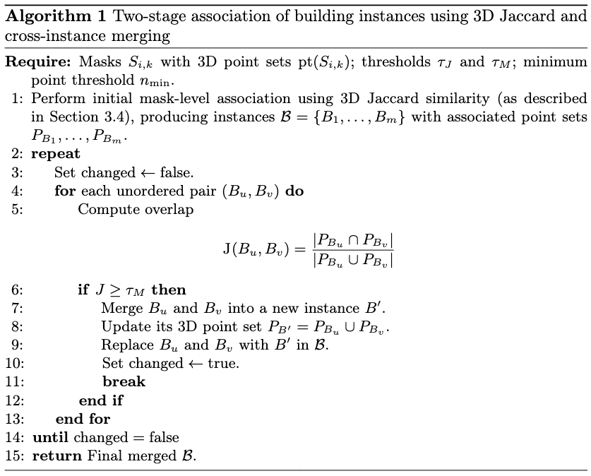
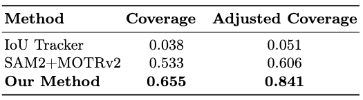

Joint 2D-3D Segmentation and Association in Street-level Imaging
Abstract
Accurate interpretation of street-level imagery is essential for large-scale urban mapping and the creation of Spatial Digital Twin (SDT) environments. This work presents a unified framework for joint 2D–3D segmentation and association that integrates visual semantics with multi-view geometric reasoning. Unlike conventional approaches that rely heavily on sequential frames for temporal tracking, our method leverages zero-shot detection and segmentation together with structure-from-motion reconstruction to establish stable cross-view correspondences. A 3D-driven association mechanism replaces traditional 2D multi-object tracking, using geometric consistency to guide identity preservation across wide-baseline viewpoints and varying imaging conditions. By combining 2D texture cues with global 3D context, the proposed pipeline is well-suited for scalable street-level processing and can be used for a variety of object types. Experiments demonstrate substantially improved coverage of ground-truth sequences and more robust identity retention compared to state-of-the-art 2D-only tracking methods, achieving a 22% performance gain in challenging urban scenarios.
Proposed Framework
.drawio.png)
Overview of the proposed pipeline's inputs and outputs. Multi-view 2D images are used to generate the 3D model, which is then used to correlate the keypoints to associate segments to the same real-world 3D objects. Additionally, a segmented 3D point cloud is generated, seen in (d). In red are the 3D Points associated with building ID 12.
.drawio.png)
Multi-stage processing pipeline. The input images are first processed with Grounded SAM to generate detections and segmentation masks. COLMAP keypoints are projected onto the masks, and their associated 3D point tracks are used to identify persistent correspondences across views. The associated mask sets are then clustered into building-level instances based on shared 3D point associations.

Algorithm 1: Two-stage association of building instances. Using 3D Jaccard similarity and cross-instance merging. Initial mask-level associations are iteratively refined by computing pairwise Jaccard overlap between building instance point sets and merging pairs that exceed the threshold τ_M.
.drawio.png)
Visualization of key stages. (a) Input source image. (b) Grounded SAM output. (c) COLMAP 2D keypoints overlaid on the masks and linked to their corresponding 3D point IDs. (d) Associated mask sets forming complete building instances.
.drawio.png)
Relationship between 2D masks and 3D points. Even if segments have points in other objects, the geometric consistency of the majority of points ensures correct object association.
Experimental Results

Quantitative comparison of association performance. Our method achieves the highest Coverage (0.655) and Adjusted Coverage (0.841), substantially outperforming IoU Tracker and SAM2+MOTRv2 baselines in challenging urban scenarios.
Poster
BibTeX
@inproceedings{Melnikov2026Seg2D3D,
title={Joint 2D-3D Segmentation and Association in Street-level Imaging},
author={Melnikov, Amir and Tanaka, Masayuki and Monno, Yusuke and Okutomi, Masatoshi},
booktitle={Proceedings of the International Conference on Pattern Recognition (ICPR)},
year={2026},
url={http://www.ok.sc.e.titech.ac.jp/res/Seg2D3D/}
}